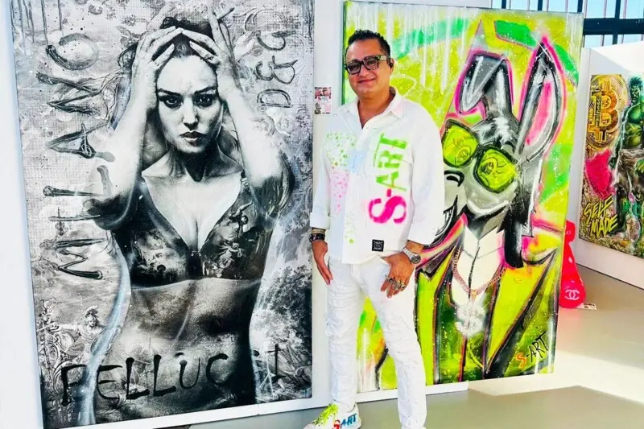
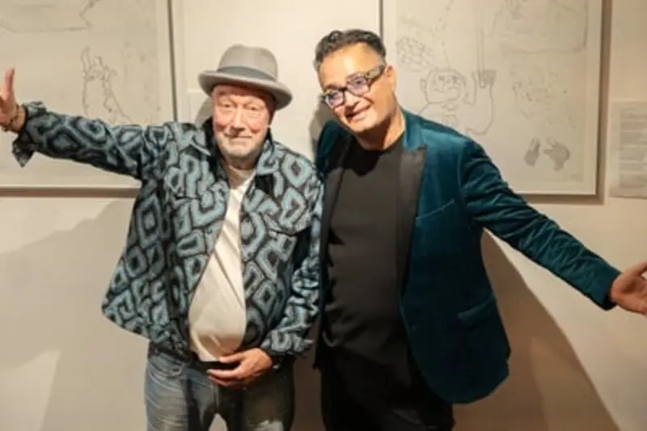
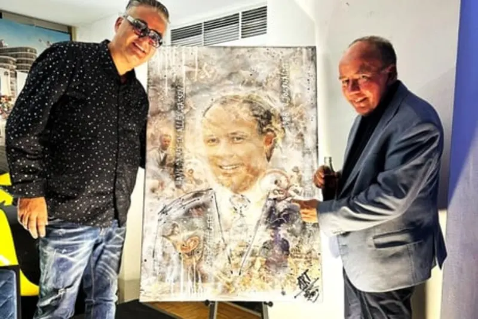
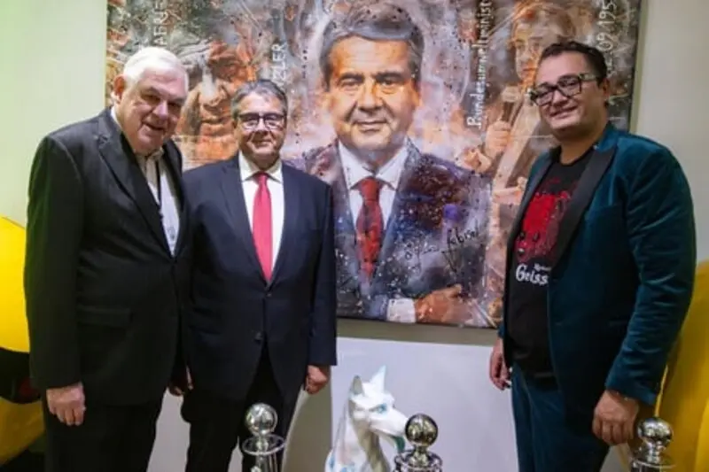
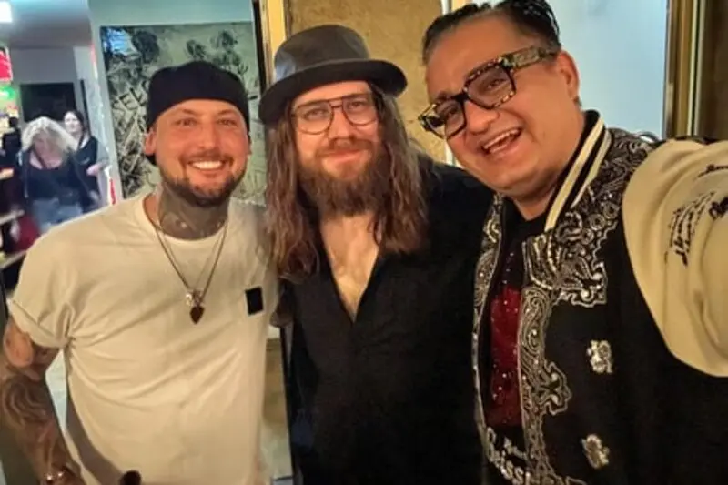

SHARY’S LES-ART / ESSEN
KATJA BURKARD
Lesung, Gespräche und ein persönlicher Abend mit der RTL-Moderatorin und Buchautorin.
Foto: © Andy AlthoffWelcome to the world of
Kunst. Ohne Filter.
Popkultur trifft Straßenenergie. Ikonen treffen auf Farbe. Und irgendwo dazwischen entsteht ein Werk, das dich nicht mehr loslässt.
Alle Werke im Shop
ZWEI WELTEN. EINE HANDSCHRIFT.
1977 im Iran geboren, seit seiner Kindheit in Deutschland zu Hause. Heute verbindet Sharyar Azhdari in Essen Architektur und Kunst – gemeinsam mit seiner Frau, der Architektin Azadeh Azhdari.
Seine Leinwände sind Begegnungen: Siebdruck, Stencil-Graffiti, digitale Druckverfahren und expressive Acrylmalerei. Schicht für Schicht. Vollendet mit hochglänzendem Kunstharz.
Inspiriert von Warhol, Richter, Banksy und Pollock. Mit einer Handschrift, die ganz seine eigene ist.
Die Geschichte hinter S-ARTVON ESSEN IN DIE WELT.
KUNST MUSS
NICHT PASSEN.
SIE MUSS
ETWAS AUSLÖSEN.
Eine Galerie, die Menschen zusammenbringt. Mit Konzerten, Gesprächen, Comedy und Lesungen. Mitten in Essen. Mitten im Leben.
Zum Veranstaltungsprogramm
Musik, Kunst und ein ganz naher Moment: Der Fischer-Z-Gründer John Watts war mit seiner PUNKT!ART-Tour zu Gast in der Galerie.
Zum Rückblick
Der RTL-Reporter gab Einblicke in seine Arbeit als Kriegsreporter. Ein Abend voller persönlicher Geschichten und aufmerksamer Gespräche.
Zum Rückblick
Politik, Wirtschaft und Kultur im Gespräch: Die STADTGESPRÄCHE.ruhr brachten rund 180 Gäste und den ehemaligen Außenminister in die Galerie.
Zum Rückblick
Zum Auftakt ihrer „Ohne Strom“-Tour spielte die Ruhrgebiets-Band Kuult vor ausverkauftem Haus. Ein Abend voller Nähe und Musik.
Zum RückblickGute Kunst. Gute Gesellschaft.
Musik, Medien, Politik und die Liebe zur Kunst. Begegnungen in der Galerie und weit darüber hinaus – von Essen bis Ibiza.
Alle Geschichten & PresseSHARY’S LES-ART / ESSEN
Lesung, Gespräche und ein persönlicher Abend mit der RTL-Moderatorin und Buchautorin.
Foto: © Andy AlthoffSAINT-TROPEZ / KUNST FÜR DEN GUTEN ZWECK
Zu Gast bei Carmen und Robert Geiss. Gemeinsam mit Gästen, darunter Sandy Meyer-Wölden, entsteht Charity-Kunst.
Foto: © privatSTADTGESPRÄCHE.RUHR / ESSEN
Politik trifft Pop-Art: ein Gesprächsabend in der Galerie – und ein ganz persönliches Unikat.
Foto: © Fotostudio Essen / Dr. Claudia PosernEIN PERSÖNLICHES ORIGINAL / ESSEN
Ein Schauspieler, eine Leinwand, eine Begegnung: die Übergabe seines Porträts in der Galerie.
Foto: © Paul CoonLIVE MIT KUULT / ESSEN
Essens Oberbürgermeister mit Azadeh und Shary beim Konzert der Ruhrgebiets-Band Kuult.
Foto: © privatCOCO BEACH / IBIZA
Kunst verbindet auch auf Ibiza: Claudia Obert mit Azadeh und Shary beim Saisonabschluss im Coco Beach.
Foto: © privat